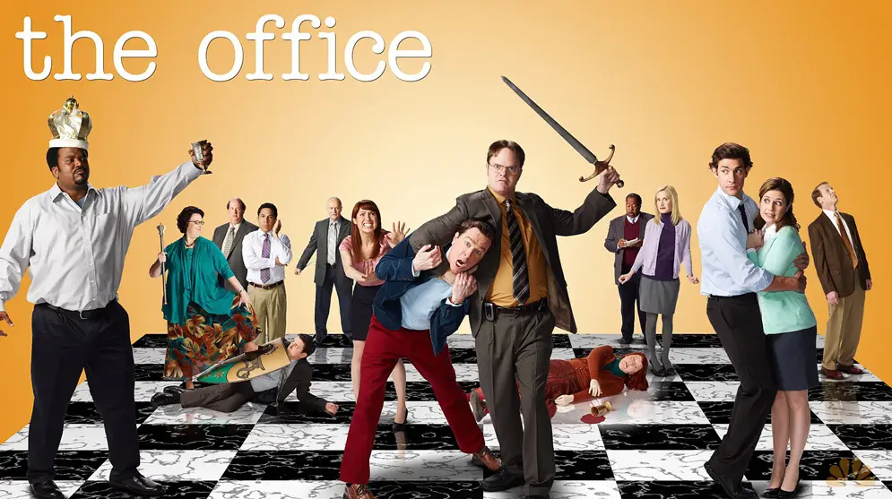

Esta adaptação americana se passa em uma empresa de papel em Scranton, Pensilvânia e tem um estilo de documentário semelhante ao original britânico estrelado por Ricky Gervais. Mostra a equipe da Dunder-Mifflin, que inclui personagens baseados no original britânico (e, provavelmente, em pessoas com quem você trabalha em seu escritório). Temos Jim, o simpático empregado que tem um pouco de todo homem. Jim sente uma atração pela recepcionista promovida a representante de vendas Pam (pois romances de escritório são sempre uma boa ideia). Temos também Dwight, o colega de trabalho bem-sucedido que carece de habilidades sociais e bom senso. E há ainda Ryan, ex-estagiário que trabalha temporariamente na matriz em Nova York antes de retornar a Scranton.
